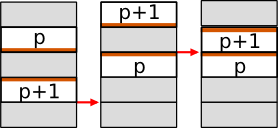

O algoritmo de Gates que vimos no exercício anterior ordena rapidamente uma pilha de panquecas que não estão queimadas aumentando o tamanho dos blocos de panquecas já ordenadas. Isto é muito mais rápido que o algoritmo que move em cada passo a panqueca maior para o fundo das panquecas ainda não ordenadas. O algoritmo de Gates ordena uma pilha de n panquecas em menos que (5n + 5)/3 passos no pior caso, enquanto que o algoritmo simplório precisa de no máximo 2n passos. Gates é então cerca de 3 vezes mais rápido no pior caso.
Neste exercício, vamos explorar uma adaptação da mesma ideia das panquecas queimadas. Isto foi publicado primeiramente por David X. Cohen e Manuel Blum. David Cohen co-fundou uns anos depois a série de TV Futurama, cheia de piadas matemáticas. Definitivamente, pessoas interessantes estudaram este singelo problema da panqueca...
O algoritmo de Cohen é um pouco mais fácil que o algoritmo de Gates já que ele distingue menos casos:
Caso 1: pelo menos uma panqueca está de cabeça para cima na pilha. Seja p a maior destas panquecas. Observe que p + 1 deve portanto estar de cabeça para baixo, a menos que p = n (e neste caso não existe a panqueca p + 1).
Caso 2: Todas as panquecas estão de cabeça para baixo. De novo, distinguimos dois sub-casos.

Como você pode ver, alcançamos um "join" em duas viradas nos casos 1 ou 2.a. Já que nós precisamos alcançar n junções para ordenar a pilha, podemos ordenar a pilha em 2n passos se o caso 2.b não ocorrer.
Este caso 2.b necessita um tratamento particular já que é obviamente impossível juntar duas panquecas em apenas duas viradas. Mas por sorte, uma única configuração bem específica da pilha cai neste caso da figura. Podemos então utilizar o algoritmo seguinte, conhecido por tirar vantagem desta configuração. Este algoritmo ordena toda a pilha em exatamente 2n passos.
Repita n vezes
vire a pilha toda de n panquecas
Vire as (n-1) panquecas mais de cima
Pode parecer mágica, mas funciona de verdade, como é mostrado no exemplo abaixo.

Portanto, em todo caso, o algoritmo de Cohen trata de ordenar a pilha de panquecas queimadas em 2n passos em todos os casos. Uma vitória sobre o algoritmo simplório para panquecas queimadas que precisa de 3n passos.
selecionado() de forma que seus logs apenas apareçam no
mundo que estiver sendo exibido no momento. Em particular, pode ajudar se
você imprimir textualmente o estado do mundo cada vez que você adentrar no
loop principal.